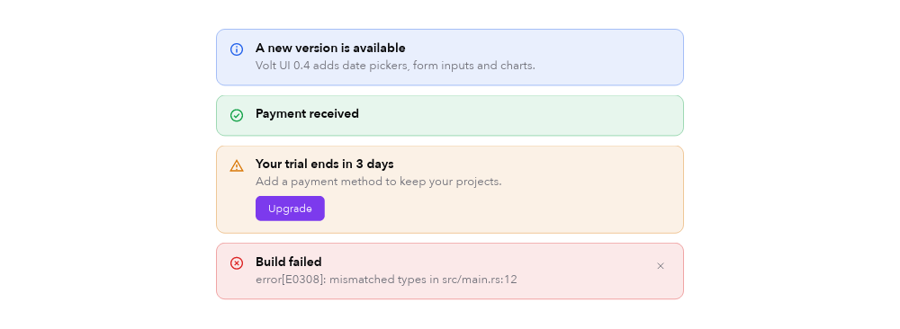
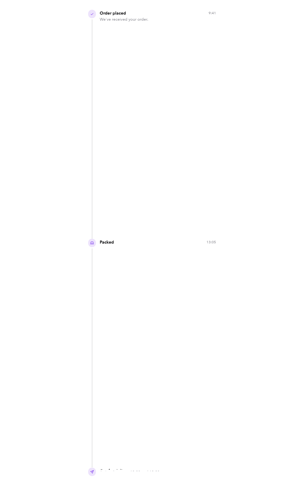
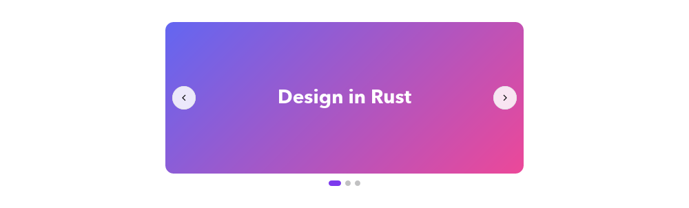

Components
Data display
The examples below come from the native Catalog. Preview images are rendered by the toolkit, not recreated in HTML. They do not demonstrate native input or desktop blur.
Avatar
01 / 10Pictures or initials on a colour derived from the name, with presence.
How to use Rust source
avatar("Ada Lovelace").size(48.).presence(Presence::Online)
avatar_group(people.map(avatar), 4)Catalog excerpt: names such as app, callbacks and helper functions belong to the example. View the complete source or start with the runnable app guide.
Alert
02 / 10Inline callouts in four severities, with actions or a close button.


How to use Rust source
alert("Build failed").severity(Severity::Error).description(..)
.on_close(|app: &mut App| app.alert = false)Catalog excerpt: names such as app, callbacks and helper functions belong to the example. View the complete source or start with the runnable app guide.
Skeleton
03 / 10Pulsing placeholders while content loads.

How to use Rust source
skeleton(220., 14.)
skeleton_text(3, 320.)Catalog excerpt: names such as app, callbacks and helper functions belong to the example. View the complete source or start with the runnable app guide.
Keyboard keys
04 / 10Key caps for shortcuts in text and menus.

How to use Rust source
kbd("⌘K")Catalog excerpt: names such as app, callbacks and helper functions belong to the example. View the complete source or start with the runnable app guide.

Steps
06 / 10Progress through a multi-step flow.

How to use Rust source
steps(["Account", "Shipping", "Payment", "Review"], app.step)Catalog excerpt: names such as app, callbacks and helper functions belong to the example. View the complete source or start with the runnable app guide.
Timeline
07 / 10Events joined by a rail.


How to use Rust source
timeline([TimelineItem::new("Order placed").time("9:41").icon(Icon::Check)])Catalog excerpt: names such as app, callbacks and helper functions belong to the example. View the complete source or start with the runnable app guide.
Empty state
08 / 10A friendly placeholder for views with nothing to show.

How to use Rust source
empty_state(Icon::Inbox, "No messages yet", "…", [compose_button])Catalog excerpt: names such as app, callbacks and helper functions belong to the example. View the complete source or start with the runnable app guide.
Stat
09 / 10Key metrics with change indicators.

How to use Rust source
stat("Revenue", "$48,210").delta("12.5%", true).hint("vs last month")Catalog excerpt: names such as app, callbacks and helper functions belong to the example. View the complete source or start with the runnable app guide.
Carousel
10 / 10One slide at a time, with arrows and dots.


How to use Rust source
carousel(slides, app.slide).key("hero").on_change(|app: &mut App, i| app.slide = i)Catalog excerpt: names such as app, callbacks and helper functions belong to the example. View the complete source or start with the runnable app guide.
Try it in the native Catalog
From the repository root. Static snapshots cannot demonstrate editing, keyboard focus, scrolling or animation.
cargo run --release --locked \
--features native-gpu,native-desktop \
--example catalog -- --page data-displayAPI reference
Properties and behavior documented by this Catalog page.
| API | Behavior |
|---|---|
avatar(name) | .image / .size / .presence / .square; avatar_group(list, max) |
alert(title) | .severity / .description / .action / .on_close |
skeleton(w, h) / skeleton_text(lines, w) | Pulsing placeholders. |
kbd(keys) | A key cap. |
breadcrumb(items) / pagination(page, pages) | Navigation aids. |
steps(labels, current) / timeline(items) | Progress and history. |
empty_state(icon, title, text, actions) | Nothing-here views. |
stat(label, value) | .delta(text, positive) / .hint |
carousel(slides, index) | .height / .wrap_around / .on_change |
image_view(Option<&Image>, w, h) | An image or a placeholder. |